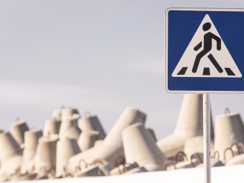
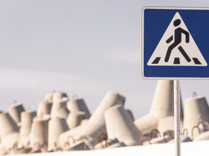
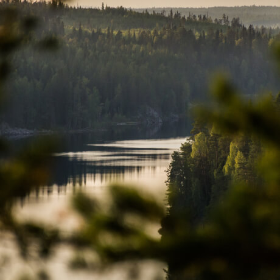

Travelling in Russia
The real country is not in the newscasts, but here.

your shelf is on top
What didn't we see there?
According to VTsIOM polls, 95% of Russians dream of going somewhere, but only 36% plan to spend their vacation in their native country. What haven't we seen here at home? In fact, Russia is a whole universe, with the gentle sea of the south, the thick forests of the Sayan Mountains and the harsh ice of the Putorana Plateau. And you can see all these beauties without millions in the account, a passport, or hours of flying. Like Vera Bashmakova, a brave young mother who took her three children in an armful, put them in her Lada and drove 20,000 kilometers across her native country. We have chosen and described some interesting places worthy of your vacation.
- Time zones 11
- UNESCO Natural Heritage Sites 12
- UNESCO cultural heritage sites 16
- Natural Reserves 105
- Airports 241


 



-
Curonian Spit
URL
park-kosa.ru
Here, among the forests and sand dunes, you can see two water horizons - the calm Curonian Bay on one side and the rippling waves of the Baltic Sea on the other. A unique natural area on the edge of the Russian enclave.
The Kaliningrad region does not end there. For the traveler and explorer, there's also Russia's westernmost point, the Baltic Spit, next door, and the German heritage of a placer of small seaside towns. The atmosphere of the area eliminates the hustle and bustle, enveloping you in the tranquility of nature and the smell of the steely, cool sea.
-
Kolsky

Almost the entire peninsula is above the Arctic Circle. The Saami tundra, from which to the south is the taiga, and to the north, the Arctic Ocean, pretending to be the Barents Sea.
Perhaps you have watched Zvyagintsev and even heard the story of the Arctic festival in Teriberka. Perhaps the word "Khibiny" has not remained under the snow of your school geography class memories. Maybe you are not interested in super-deep well, penetrating through the Earth's crust, and apatites made you feel apathetic for a long time. But your dream of seeing the northern lights is starting to come true with a ticket to Murmansk.
-
Altay
URL
Facebook
Altai is one of the most beautiful places in Russia. First of all, because of the mountains: if you drive along the ridge, you will see slopes studded with pine trees, mountain rivers and lakes. And if you open the windows in the car, you can get acquainted with the invisible miracle of local places - the mountain air.
The climate in Altai is temperate, so it's best to go here in summer. This way you can see the variety of local flora and fauna. Elk roam through the forests of Altai, eagles fly over the ridges, and roe deer graze on the plains. And the famous Pallas' cats are also inhabitants of the Altai region.
-
Winter Baikal

Everyone knows Baikal as the largest lake in the world. Many people also know that it is the largest source of fresh water and one of the most beautiful places in Russia.
Of course, that's all true. But Baikal is also an ideal place for skijoring competitions. This is a sport where a skier ties himself to a motorcycle, and the tandem tries to reach as much speed as possible on the ice. In March 2019, a world record of 197.011 km/h was set at the Baikal Mile Festival.
-
Karelia
Siberia ends not in the Urals, but in Karelia: the Siberian larch, which forms the taiga, does not grow west of Vodlozero. But here it reaches up to 30 meters - the forests of Karelian national parks have never known an axe because of the impassable swamps. Some pines are more than half a millennium old. Touch a living creature that saw the sun before Ivan the Terrible saw it. In the virgin forest for a hundred kilometers you will not find a trail. And on rare paths, trees a few meters from the ground are marked with bear claws. So that everyone knows who is the master here.
To Baikal "by dogs"
Based on a tutorial on the Trans-Siberian Railway, a trip from the capital to Baikal by train.